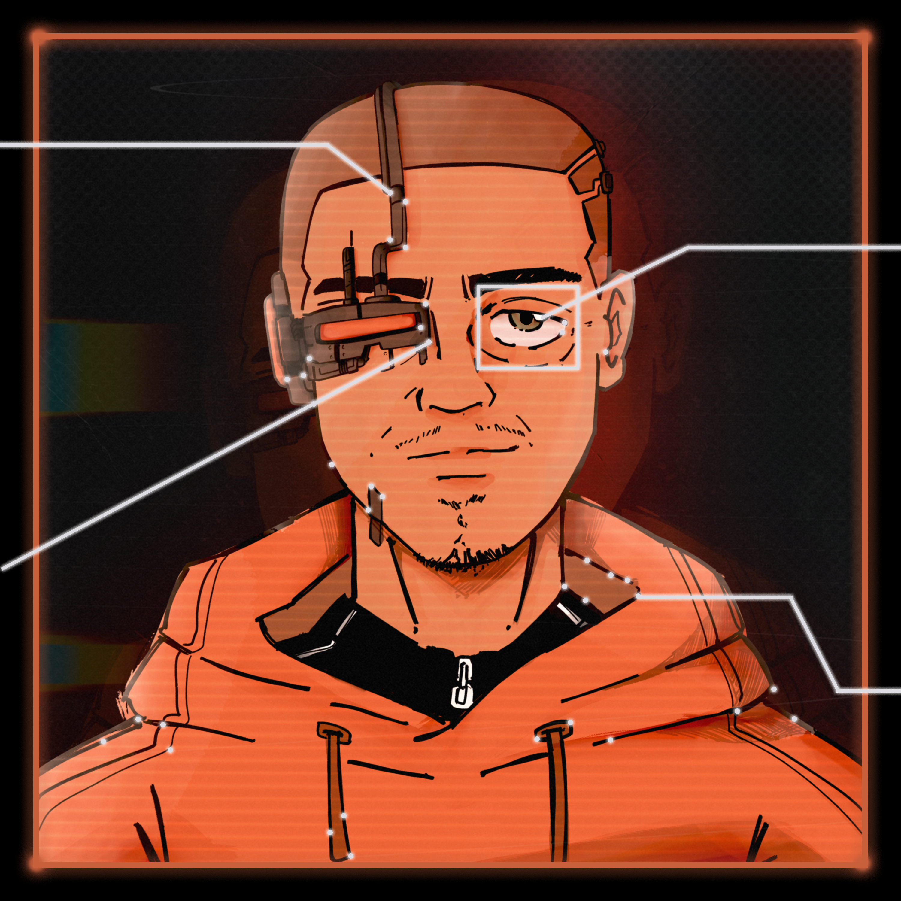

Estudante de Ciência e Tecnologia / Engenharia da Computação @UNIFESP Pesquisador em Visão Computacional @INPE
Sou estudante de Ciência e Tecnologia / Engenharia da Computação no Instituto de Ciência e Tecnologia UNIFESP, São José dos Campos.
Trabalho na pesquisa e desenvolvimento de um software para identificação de raios a partir do processamento de imagens no Instituto Nacional de Pesquisas Espaciais (INPE). Atualmente também coordeno o Clube Juvenil 14 Bis, um local destinado para a formação técnica e emocional de crianças e adolescentes.
Tenho interesse em robótica, inteligência artificial, computação em nuvem, ciências espaciais, linguística e outros assuntos do meio STEM.
Quando era pequeno, admirava as tecnologias nas histórias de ficção científica e heróis, aquilo tudo me motivava a descobrir mais. Com o passar do tempo, aquilo se tornou parte da minha realidade.
Percebi através de minhas experiências que a tecnologia é muito importante quando utilizada para resolver problemas reais e gerar impacto na vida das pessoas. É isso que me motiva.
